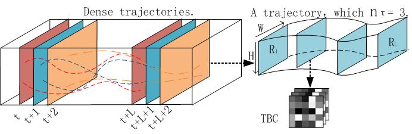

Human Action Recognition With Trajectory Based Covariance Descriptor In Unconstrained Videos
Hanli Wang , Yun Yi , Jun Wu
Department of Computer Science and Technology, Tongji University, Shanghai, P. R. China
Overview:
Human action recognition from realistic videos plays an important role in multimedia event detection and understanding. To recognize human action, a novel Trajectory Based Covariance (TBC) descriptor is proposed, which is formulated along the dense trajectories. To map the descriptor matrix to vector space and trim out the redundancy of data, the TBC descriptor matrix is projected to Euclidean space by the logarithm principal components analysis. Our method is tested on the challenging Hollywood2 and TV Human Interaction datasets. Experimental results show that the proposed TBC descriptor outperforms three baseline descriptors (i.e., histogram of oriented gradient, histogram of optical flow and motion boundary histogram), and our method achieves better recognition performances as compared with a number of state-of-the-art approaches.
Method:
The TBC descriptor is based on the covariance matrix representation of trajectory, and captures the linear relationships between the derivations of dense optical flow. Moreover, the TBC descriptor can be calculated along different trajectories, e.g. dense trajectories, improved dense trajectories. Figure 1 is the illustration of TBC. The experiments demonstrate that the TBC descriptor outperforms the classical trajectory-based descriptors, meanwhile, the TBC descriptor and the classical descriptors are complementary to each other.

Fig. 1 Illustration of TBC
Download:
TBC-1.0:原站插图：图片暂留白TBC_V1.0.zip
Please cite the following paper when using TBC:
Hanli Wang, Yun Yi, and Jun Wu, Human Action Recognition With Trajectory Based Covariance Descriptor In Unconstrained Videos, 2015 ACM Multimedia Conference (ACM MM ’15), Brisbane, Australia, pp. 1175-1178, Oct. 26-30, 2015.